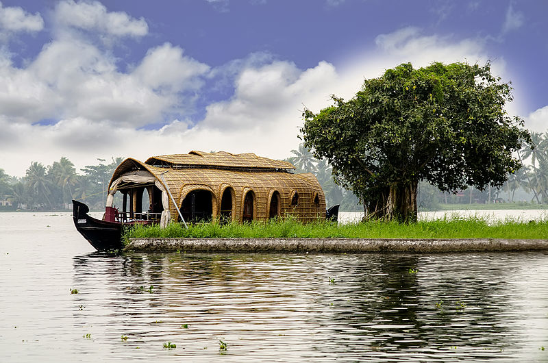

Incredible india
LIVE WITH NO EXCUSES AND TRAEVEL WITH NO REGRETS

MUSSOORIE
City : Mussoorie, Uttrakhand
Best time to visit: During summers
Nearest railway station : Dehradun
Why to visit ?
The scenic beauty of Uttarakhand is no surprise to any of us but Mussoorie takes it to the next level. With mid-range Himalayan mountains guarding Mussoorie, you will be treated with some of the best mountains sights in the world

GOA
City : Goa
Best time to visit: December to February
Nearest railway station : Karmali
Why to visit ?
Goa is famous for its beaches, parties and casinos. Generally people come here for holidays and festivals and mostly during new year. Some of the tourist places are also there for Wich it is famous ,like , our Lady of the Immaculate concention church, Baga beach , anjuna beach, calangute beach and resorts.
KERALA
City : Kerela
Best time to visit: During summers
Nearest railway station : Vellappuzha
Why to visit ?
Named as one of the ten paradises of the world by National Geographic Traveler, Kerala is famous especially for its ecotourism initiatives and beautiful backwaters. Its unique culture and traditions, coupled with its varied demography, have made Kerala one of the most popular tourist destinations in the world